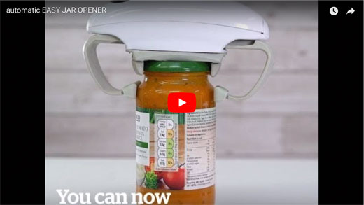

AUTOMATIC EZY
JAR OPENER
Open Easy
Easy Opener
Will mean you never have to
struggle to open a jar again!
The opener has adjustable grips, so
can be fitted to all jars of any size.
Once on the jar all you have to do is
press the button and hey presto!
With the easy opener, say goodbye
to having to ask your housemates to
open your jars for you.
The easy opener is operated by
2 x AA batteries. To use simply place the
easy opener on the jar and press the
button. The easy opener grips the jar,
so you don’t need to hold onto the jar
while it’s being used.
AUTOMATIC EZY
JAR OPENER
Open Easy